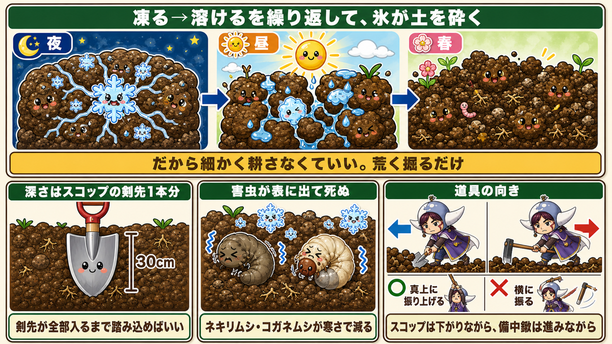
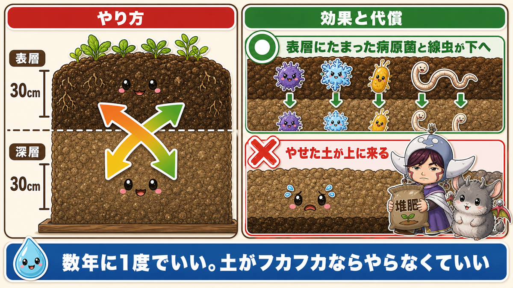
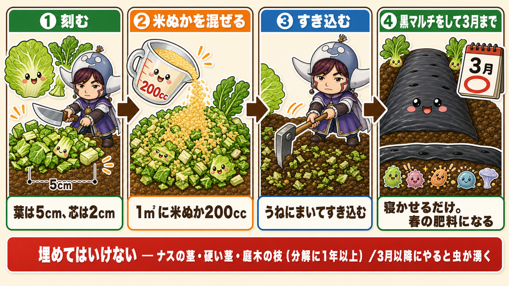
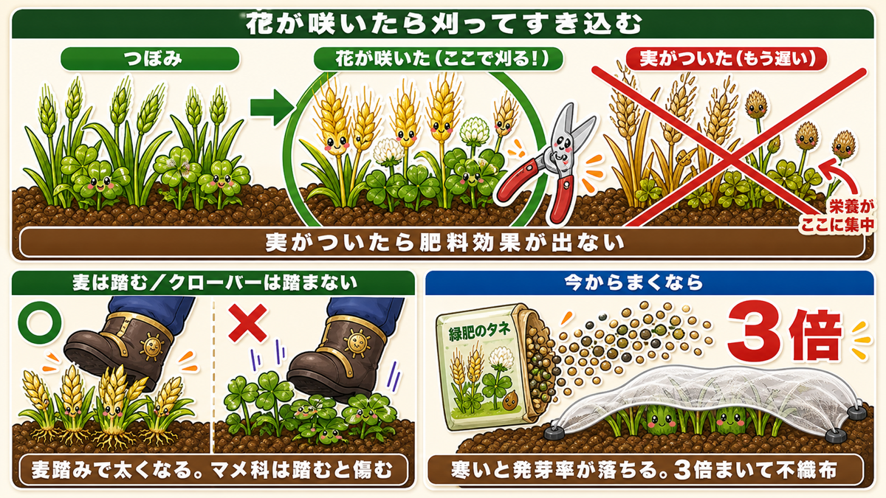
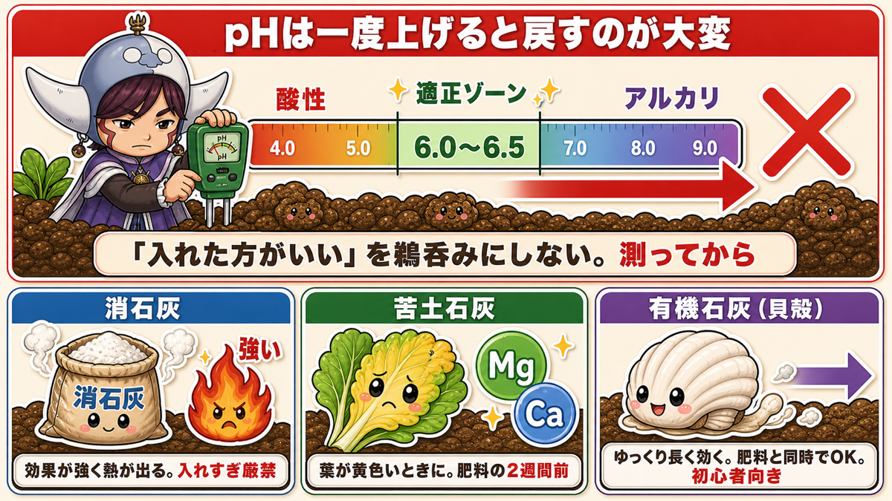
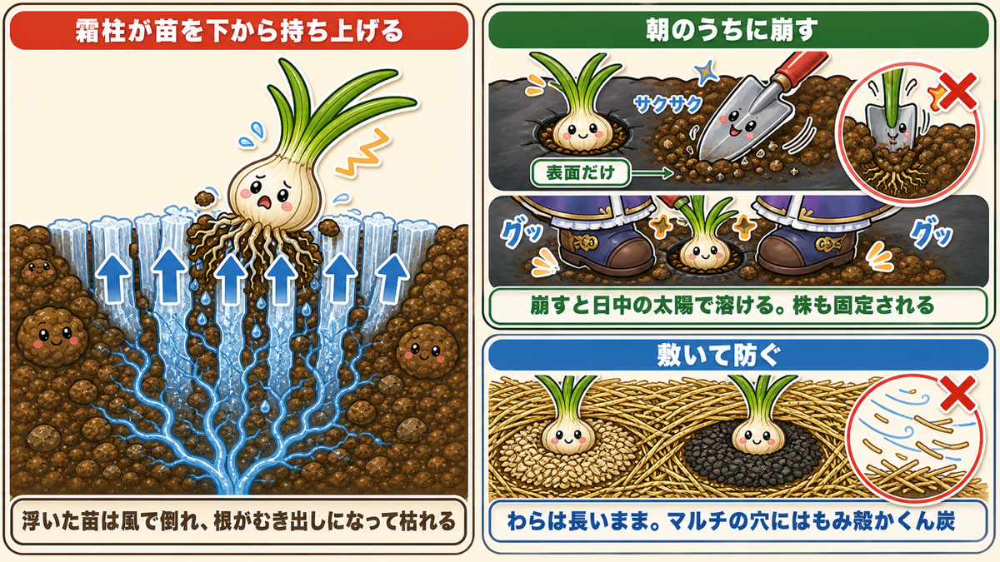

【保存版】冬の畑は「掘って寝かせる」❄️ 春がラクになる6つの仕込み
🗨️「冬って、畑ですることある？」
🗨️「春になってから耕せばいいよね」
🗨️「玉ねぎの苗が、いつのまにか浮いて倒れてた」
どうも、8150（えいこう）です🌱 家庭菜園歴8年、理科の教員免許を持っていて、有機・無農薬で野菜を育てています。
今回は、12月から2月にかけての畑の話です。
先に、この記事でいちばん言いたいことを言っておきますね。
冬は「何もない季節」ではなく、「仕込みの季節」です。
畑に残っている野菜が少なくて、水やりも追肥もいらない。作業が減るので、暇に見えます。でも実は、1年でいちばん時間に余裕がある時期でもあるんですよね。
そしてこの時期に手を動かしたかどうかが、春にはっきり出ます。私の実感だと、春の畑仕事の3割くらいは冬に前倒しできます。
しかも冬の作業は、ほとんどが「やって寝かせるだけ」。手をかけ続ける必要がありません。寒い日に1回か2回動けば、あとは土と微生物が勝手に仕事をしてくれます。
今日はその6つを、順番にお話しします☺️
※以下の時期は中間地（関東〜関西の平野部）が目安。寒い地域は少し早め、暖かい地域は少し遅らせて✨️
📖 この記事の目次
①寒起こし ー スコップ1本ぶん、荒く掘るだけ

まずこれです。冬にやることを1つだけ選ぶなら、寒起こしを選びます。
やることは、びっくりするほど単純です。
深さ20〜30cmを、荒く掘り起こす。それだけ。
「荒く」でいいんです
ここが大事なところで、細かく耕す必要はまったくありません。ゴロゴロした塊のまま、ひっくり返して放っておく。
なぜなら、そのあとの仕事は冬がやってくれるからです。
掘り起こした土は、夜に凍って、昼に溶ける。これを毎日繰り返します。すると土の塊が内側から崩れて、春にはフカフカになっている。人が細かく砕く必要はないんです。
深さの目安は「スコップの剣先1本分」
30cmと言われても、感覚がつかみにくいですよね。
実は、スコップの剣先はちょうど30cmくらいあります。つまり剣先が全部入るまで踏み込めば、それでいい。道具そのものが定規になっているわけです。
これを知ってから、私は寒起こしがずいぶん気楽になりました。
もうひとつの効果は「虫退治」
寒起こしには、土をほぐす以外にもうひとつ大きな効果があります。
土の中で冬を越そうとしている害虫が、掘り返されて表面に出てきます。そして寒さに当たって死にます。
ネキリムシ（夜に苗の根元をかじって倒す虫）やコガネムシの幼虫が、これで減ります。春に苗を植えたそばから倒される、あの悔しい失敗が減るんですよ。
道具の使い方だけ、安全のために
スコップと備中鍬（びっちゅうぐわ／先が三本や四本に分かれた鍬）で、動き方が逆になります。
- スコップは、後ろに下がりながら使う
- 備中鍬は、前に進みながら使う
そして備中鍬でひとつだけ約束を。横に振り回さず、必ず真上に振り上げてください。横に振ると危険です。誰かと一緒に作業するときは、備中鍬を使っている人の真後ろに立たないように。
寒起こしは、余裕があれば毎年やって大丈夫です。時期は12月下旬から2月ごろ。いちばん寒い時期がいちばん効きます。
②天地返し ー 数年に1度でいい大仕事

寒起こしとよく混同されるのが、天地返しです。見た目は似ていますが、目的がまったく違います。
寒起こしは「表面をほぐす」。天地返しは「上下を入れ替える」。
なぜ入れ替えるのか
同じ畑で野菜を作り続けていると、2つのことが起きます。
- 下のほうに硬盤層（こうばんそう）という硬い層ができて、根が張れなくなる
- 表層に土壌病原菌と線虫（せんちゅう／目に見えない小さな虫）がたまってくる
この2つ目が、連作障害の正体のひとつです。同じ野菜を同じ場所で作ると調子が悪くなるのは、その野菜を狙う菌や虫が表層に増えていくからなんですね。
そこで、上の土と下の土を入れ替える。菌と線虫が地中深くに移り、濃度が下がります。土がリフレッシュされる、というわけです。
家庭菜園でのやり方
農家さんはユンボのような重機で80cm〜1mも掘りますが、家庭菜園ではスコップで十分です。
- 表層30cmを掘って、脇に置いておく
- その下の深層30cmを掘って、別の場所に置いておく
- すぐ隣の表層30cmを掘って、さっき空けた深層の穴に入れる
- その隣の深層を掘って、隣に置く
- 横に進みながら繰り返し、最後の穴に、最初に掘った表層の土と深層の土を戻す
要するに、上の土が下へ、下の土が上へと、ところてん式にずれていくイメージです。
★ここは必ず知っておいてください
天地返しには、はっきりしたデメリットがあります。
養分の少ない土が、上に来ます。
長年かけて肥えてきた表面の土を、地中に埋めてしまうわけですから当然ですよね。なので天地返しをしたあとに野菜を作るときは、堆肥や肥料を普段より多めに入れてください。ここを知らずにやると、その年だけ生育がガクッと落ちます。
そしてもうひとつ。
普段からしっかり土作りをしていて、土がすでにフカフカなら、無理にやる必要はありません。
天地返しは「毎年病害虫で困っている」「土が硬くて根が張らない」という人のための作業です。順調な畑を無理にひっくり返すと、かえってマイナスになります。目安としては数年に1度で十分です。
③捨てる葉を、土に戻す ー 冬しかできない技

これ、私がいちばん「得したな」と感じている作業です。
キャベツの外葉、大根の傷んだ葉、ブロッコリーの葉。冬の畑では、これがどっさり出ます。普通は捨てますよね。
でもこれを土に戻すと、春の肥料になります。
手順は4つだけ
- 葉を5cmくらいに刻む（芯のような硬い部分は2cmくらいまで細かく）
- 米ぬかを1平方メートルあたり200ccほど混ぜる
- うねにまいて、すき込む
- うねを立てて、黒マルチを張る
あとは3月まで、そのまま放置です。
黒マルチを張ると、中がほんのり保温状態になります。すると春先に微生物が一気に働いて、葉が分解され、土に還ります。3月以降にそこで野菜を作るとき、あらためて肥料を入れなくてよくなるくらいです。
★「虫が湧く」は冬なら心配ありません
残渣を土に埋めると聞くと、「虫が湧くのでは」と心配になりますよね。
大丈夫です。真冬なら湧きません。
というより、これは冬にしかできない技なんです。同じことを3月以降にやると、本当に虫が湧きます。気温が上がって虫が動き出すからですね。
寒さを味方につける作業だと思ってください。
使ってはいけない残渣
ただし、なんでも埋めていいわけではありません。
- ナスの茎（もはや木です。分解に時間がかかりすぎます）
- 太く硬くなったブロッコリーやキャベツの茎
- 庭木の枝、ローズマリーのような硬い枝（1年以上分解されないことも）
このあたりは避けてください。柔らかい葉っぱだけ、と覚えておけば失敗しません。
落ち葉は「そのまま撒く」と危険です
落ち葉も同じように使えそうに見えますが、ここは注意が必要です。
拾ってきた落ち葉には、害虫が卵を産みつけていたり、あまり良くない菌が繁殖していたりします。目に見えないリスクがくっついてくるんですね。
落ち葉の底のほうにある、黒くなって腐葉土化した部分。あそこには分解された有機物がたっぷりあって、確かに畑にほしいものです。でも、それとセットでリスクも来てしまう。
なので落ち葉は、完熟堆肥にしてから使ってください。しっかり発酵させれば、害虫の卵も変な菌も分解されて無害になります。
作り方はシンプルです。
- 落ち葉を踏んで、細かく砕く
- 土と混ぜる
- 米ぬかをたっぷり入れる
- 上から土をかぶせて、完全にふたをする
- びしょびしょになるまで水を入れる（分解には水が必要です）
- シートをかけておく
冬の間はほとんど変化しません。気温が上がって夏を越し、秋口になるころに完成します。1年仕事ですが、できあがったものは腐葉土より一段上で、土をフカフカにするだけでなく肥料の効きも良くなりますよ。
④空いたうねに、緑肥をまく

冬に何も植えないうねが空いているなら、緑肥（りょくひ）という手があります。
緑肥は、食べるためではなく、畑の肥やしにするために育てる作物のことです。麦（イネ科）とクローバー（マメ科）が代表選手ですね。
何がいいのか
- 冬の間も土の中の微生物が生きていられる。何も植えない裸の土より、微生物が保たれます
- マメ科は根粒菌（こんりゅうきん）が空気中の窒素を集めて、土に置いていってくれます
- 線虫や害虫が多い土壌の改良に効きます
- 春になると自然に枯れるので、次の栽培にスムーズに移れます
★刈るタイミングを間違えないでください
ここが緑肥の唯一にして最大のポイントです。
花が咲いた段階で刈り取って、すき込む。
実がついてしまうと、栄養が全部その実に集中します。そうなってから土に戻しても、肥料としての効果がほとんど出ません。「もう少し育ててから」が失敗のもとなんですね。
麦の場合は、穂が出たら穂だけ刈り取るという手もあります。こうすると生育期間を伸ばせて、5月の植え付けまで青々とした葉を残せます。
今からまくなら
寒くなってからまく場合は、コツが2つあります。
- タネを3倍くらい多めにまく（寒いと発芽率が極端に落ちるため）
- 使い古しの不織布や防虫ネットをベタがけして、発芽を助ける
麦なら、芽が出て少し伸びたら麦踏みをしてください。踏まれた麦は茎が太くなって、根元から枝分かれして丈夫に育ちます。子どもと一緒にやると、けっこう盛り上がりますよ。
逆にマメ科のクローバーは踏むと傷むので、こちらは踏まないように。同じ緑肥でも正反対なので気をつけてください。
ちなみに、猫を飼っている方はご存じの猫草。あれの正体はえん麦で、緑肥としても優秀です。タネが手に入りやすいので、最初の一歩にはちょうどいいと思います😊
⑤石灰は「入れる前に測る」

冬の土づくりで、いちばん誤解が多いのが石灰です。
「石灰を入れると土が良くなる」と聞いて、とりあえず入れている方が多いのですが、ここは慎重にいきましょう。
なぜ石灰を入れるのか
理由は2つあります。
- カルシウムの補給。カルシウムが足りないと白菜の中心部が変色したり、秋じゃがに黒い斑点が出たりします
- pH（ピーエイチ／土の酸性・アルカリ性の度合い）の調整。日本は雨が酸性なので、放っておくと土は酸性に傾いていきます
カルシウムには面白い性質があって、植物の体の中を移動しにくいんです。だから足りない場所に体内でやりくりして回すことができない。土から吸い上げて補うしかありません。だからこそ土に入れておく意味があるわけですね。
3種類あって、性格がぜんぜん違います
- 消石灰（しょうせっかい）… 石灰岩を砕いたもの。効果が非常に強く、入れると熱が出て消毒のような働きをします。強力なぶん、★入れすぎは危険です
- 苦土石灰（くどせっかい）… マグネシウムとカルシウムが豊富。葉が黄色っぽいなど、生育異常があるときに向きます
- 有機石灰（貝殻を焼いて粉砕したもの）… ★ゆっくり長く効きます。熱がほとんど出ないので、入れてすぐ肥料を入れたり植えたりできるのが強み。家庭菜園にはこれがいちばん使いやすいです
初めての方には、有機石灰をおすすめします。ただし「ゆっくり効くから」と大量に入れるのはやめてください。時間差でしっかり効きます。
もっと安全にいきたい方には、卵の殻から作った石灰もあります。多めに入れてもアルカリに寄りにくいので、微調整や試しに使うのに向いています。
★これだけは守ってほしいこと
pHは、一度上げると酸性に戻すのがとても大変です。
「石灰を入れたほうがいいらしい」を鵜呑みにして、測らずに入れる。これがいちばん危ない。入れすぎてアルカリに振り切れた土を戻すのは、本当に時間がかかります。
なので、簡易的なもので構わないので、測ってから入れてください。ホームセンターで売っている測定器で十分です。
ほとんどの野菜は6〜6.5あたりで問題なく育ちます。例外として、さやえんどうやほうれん草は少しアルカリ寄りが好き。じゃがいもは逆に酸性寄りが好きです。
入れ方
- 量は1平方メートルあたり100cc程度で十分
- 消石灰と苦土石灰は、肥料を入れる2週間ほど前に。★肥料と同じタイミングで入れない
- 有機石灰はゆっくり効くので、肥料と同時でも大丈夫
- 入れたらしっかり耕して、土が乾いていれば水をやる（水がないと分解が進みません）
ちなみに鶏ふんにも、アルカリ側に寄せる働きとカルシウム・マグネシウムを補う働きがあります。普段から鶏ふんを使っている方は、それだけで大きな欠乏症は出にくいですよ。
⑥霜柱から、苗を守る

12月から2月にかけて、冬の畑には霜が降ります。
霜そのものより、やっかいなのは霜柱です。
なぜ苗が浮くのか
霜柱は、株元の土を下から押し上げます。特に玉ねぎの植え穴にできやすくて、気づくと苗が浮き上がっている。浮いた苗は少しの風で倒れたり飛ばされたり、根がむき出しになって枯れたりします。
去年の私も、朝の畑で玉ねぎが数本ひっくり返っているのを見て、しばらく原因が分からずにいました。犯人は霜柱でした。
対策1：朝のうちに崩す
いちばん確実なのは、霜柱そのものを崩してしまうことです。
- 朝のうちにやる。崩しておくと、日中の太陽で溶けやすくなります
- マルチをしているなら、穴に移植ごてを入れて表面だけサクサクと崩す。★深く突くと根を傷めるので、あくまで表面だけ
- 本数が多いときは、株の両脇に足を添えてグッと押す。霜柱が潰れると同時に、株もしっかり固定されて一石二鳥です
天気予報を見て、翌朝の冷え込みが強そうな日は畑に行く。これだけで玉ねぎの生き残りがずいぶん変わります。
対策2：株元に何か敷く
そもそも霜柱ができにくくする方法もあります。
- わらを敷く。★短く切ったものより、長いままうねに沿って敷くほうが風で飛びません
- マルチをしているなら、穴の中にもみ殻かくん炭を入れる
- 本数が多いなら、うねの上にまいてしまってもOK
小さい苗や、まだ根が活着していない苗は、不織布や防虫ネットで覆ってあげてください。逆に、スナップエンドウのようにある程度の背丈になっているものは、それほど神経質にならなくて大丈夫です。
もみ殻がとにかく便利です
いま出てきたもみ殻。冬の畑ではこれが本当に働きます。
面白いのは、もみ殻には窒素・リン酸・カリがほとんど含まれていないこと。つまり肥料ではありません。それなのに、使い道がやたらと多いんです。
- タネまきのあと上からまくと、乾燥を防いで発芽が揃う。★にんじん・玉ねぎ・ネギのように発芽がそろいにくいものに特に効きます
- 冬は保温と防霜、夏は地温上昇と乾燥を抑える
- 粘土質の土にすき込むと、通気性が良くなって土がフカフカになる
- 低温で焼いてくん炭にすると、通気性・排水性が良くなるうえ、弱アルカリ性なので酸度の矯正にもなります
- さつまいもや里芋の種イモを冬越しさせるときの保存材にもなる
米農家さんや米屋さんに知り合いがいれば分けてもらえます。ホームセンターでも買えますが、少し割高になりますね。
★冬にやってはいけないこと3つ
ここまで「やること」を話してきましたが、逆も同じくらい大事です。
①肥料を入れて、すぐタネをまく
肥料は土の中で分解されてから効きます。その分解に、2週間以上かかります。
そして厳寒期は、野菜の成長も遅ければ、肥料の分解も遅い。分解しきっていない肥料のそばにタネをまくと、障害が出ることがあります。
なので冬は、何も入れずにタネをまいて、あとから生育を見て追肥するほうがうまくいきます。これは春夏とは逆の考え方なので、覚えておいてください。
②防虫ネットをすぐ外す
葉が伸びてネットにつっかえてくると、つい外したくなります。
でも、まだ虫は活動しています。外すのはもう少し待って、当たっているところを緩めるか、支柱を足して高さを稼いでください。
③結球中の下葉を取る
キャベツや白菜の下葉が地面についていると、取りたくなりますよね。
でも、成長段階の外葉は結球のために働いています。ここで取ると、巻かなくなります。
取っていいのは、完全に黄色くなった葉だけ。これは白菜の記事でもお伝えしたことですが、冬の畑で何度も出てくる大事なポイントなので、もう一度書いておきます。
おまけ：11月中旬までに穫っておくもの
冬の作業に入る前に、片づけておきたい収穫があります。
- 大根 … 冬を越すとスが入って、水分が抜けて味が落ちます。11月から12月初旬がベスト
- 玉レタス … 固く結球したら早めに。遅れると軟腐病やアブラムシが出ます
- 里芋・さつまいも … ★霜が降りる前に。当たると傷んで収穫できなくなります
学ぶ：なぜ土は、凍ると柔らかくなるのか🔬
理科の時間です。ここが分かると、寒起こしが急に面白くなります。
水には、ちょっと変わった性質があります。
凍ると、体積が約9%増えるんです。
たいていの物質は冷えると縮みます。でも水だけは、氷になるときに膨らむ。氷が水に浮くのも、これが理由ですね。
さて、掘り起こした土の塊の中には、水がしみ込んでいます。夜になって気温が下がると、この水が凍って膨らむ。すると塊を内側から押し広げて、ひびを入れます。
昼になると溶けて、押し広げられた分の隙間が残る。
これを毎日、何十回も繰り返す。それが冬の間に起きていることです。
つまり寒起こしとは、自然の耕運機に土を預ける作業なんですね。人が細かく砕くのではなく、氷に砕いてもらう。だから「荒く掘るだけでいい」わけです。
同じ理屈で、冬に道路がひび割れるのも凍結と融解の繰り返しが原因です。畑と道路で、同じことが起きているんですよ。
そして霜柱も、実は水の性質そのものです。地中の水が細い隙間を伝って地表まで吸い上げられ、そこで凍って柱になる。下から次々と水が来るので、柱は伸び続けて土を押し上げる。だから苗が浮くんですね。
お子さんと一緒なら、ペットボトルに水を入れて凍らせてみてください。ふくらんで、ときには容器が変形します。「この力が畑の土を砕いている」と話すと、目に見えない冬の仕事が急に実感できますよ😊
まとめ
ここまで読んでくださって、ありがとうございます！
冬の畑は、動かないようでいて、いちばん静かに差がつく季節です。ポイントを整理しておきますね。
- 寒起こしは深さ20〜30cmを荒く掘るだけ。スコップの剣先1本分が目安。細かく砕くのは氷の仕事
- 天地返しは数年に1度。★養分の少ない土が上に来るので、次に作るときは堆肥・肥料を多めに
- 捨てる外葉は5cmに刻んで米ぬかと一緒に埋め、黒マルチをして3月まで寝かせる。冬だけ虫が湧かない
- 緑肥は花が咲いた段階で刈ってすき込む。実がついたら手遅れ
- 石灰は★測ってから入れる。迷ったら有機石灰。1平方メートルに100cc
- 霜柱は朝のうちに崩す。株の両脇を足で押すのがいちばん早い。わら・もみ殻・くん炭も効きます
- 冬にやってはいけない3つ ー 肥料を入れてすぐまく／防虫ネットをすぐ外す／結球中の下葉を取る
全部やろうとしなくて大丈夫です。まずは空いているうねを1つ、スコップで荒く掘って放っておいてください。それだけで、春に触ったときの土の感触が変わります。冬にやったことは、必ず春に返ってきますよ❄️
次回は、秋冬野菜の大物「ブロッコリー」。葉ばかりで花蕾が出ないときに、絶対にやってはいけないことをお話しします🥦
米ぬか
刻んだ外葉に混ぜて埋めると、春の肥料になります。1平方メートルに200ccが目安。落ち葉堆肥を仕込むときにも、これがないと発酵が始まりません。
![[商品価格に関しましては、リンクが作成された時点と現時点で情報が変更されている場合がございます。]](https://hbb.afl.rakuten.co.jp/hgb/56d21cb1.eebb183f.56d21cb2.51de80a8/?me_id=1247635&item_id=10000021&pc=https%3A%2F%2Fthumbnail.image.rakuten.co.jp%2F%400_mall%2Feco-hiryo%2Fcabinet%2Fitem6%2Fset-1-a1.jpg%3F_ex%3D240x240&s=240x240&t=picttext "[商品価格に関しましては、リンクが作成された時点と現時点で情報が変更されている場合がございます。]")

カキ殻石灰（有機石灰）
記事で「迷ったらこれ」と書いた有機石灰です。熱が出ないので肥料と同時に入れられて、ゆっくり長く効きます。※入れる前にpHを測ってからにしてください。
![[商品価格に関しましては、リンクが作成された時点と現時点で情報が変更されている場合がございます。]](https://hbb.afl.rakuten.co.jp/hgb/56d21b6a.c19127f6.56d21b6b.c5473e84/?me_id=1258048&item_id=10000067&pc=https%3A%2F%2Fthumbnail.image.rakuten.co.jp%2F%400_mall%2Fkaneashop%2Fcabinet%2F12084383%2F12419790%2Fimgrc0108924525.jpg%3F_ex%3D240x240&s=240x240&t=picttext "[商品価格に関しましては、リンクが作成された時点と現時点で情報が変更されている場合がございます。]")
もみ殻くん炭
霜柱で苗が浮くのを防ぎ、粘土質の土に混ぜれば通気性が良くなります。弱アルカリ性なので酸度の矯正にもなる、冬にいちばん働く資材です。
![[商品価格に関しましては、リンクが作成された時点と現時点で情報が変更されている場合がございます。]](https://hbb.afl.rakuten.co.jp/hgb/56bc30bc.01c5b89d.56bc30bd.ee310357/?me_id=1231595&item_id=10000412&pc=https%3A%2F%2Fthumbnail.image.rakuten.co.jp%2F%400_mall%2Fplanto-iwa%2Fcabinet%2F2707.jpg%3F_ex%3D240x240&s=240x240&t=picttext "[商品価格に関しましては、リンクが作成された時点と現時点で情報が変更されている場合がございます。]")
敷きわら
株元に敷いて霜柱を防ぎます。記事に書いたとおり、短く切ったものより長いままうねに沿って敷くほうが、風で飛びません。
![[商品価格に関しましては、リンクが作成された時点と現時点で情報が変更されている場合がございます。]](https://hbb.afl.rakuten.co.jp/hgb/56bc2fb2.ff40a6e6.56bc2fb3.618f6a70/?me_id=1257026&item_id=10000211&pc=https%3A%2F%2Fthumbnail.image.rakuten.co.jp%2F%400_mall%2Fsharuka%2Fcabinet%2F09042254%2Fimgrc0081094692.jpg%3F_ex%3D240x240&s=240x240&t=picttext "[商品価格に関しましては、リンクが作成された時点と現時点で情報が変更されている場合がございます。]")
えん麦のタネ（緑肥用）
空いたうねにまいておくと、冬の間も土の微生物が生きていられます。春に花が咲いたら刈ってすき込むだけ。ちなみにこれ、猫草と同じものです。
![[商品価格に関しましては、リンクが作成された時点と現時点で情報が変更されている場合がございます。]](https://hbb.afl.rakuten.co.jp/hgb/56d21de3.ae31fd42.56d21de4.bc885a0a/?me_id=1381384&item_id=10000017&pc=https%3A%2F%2Fthumbnail.image.rakuten.co.jp%2F%400_mall%2Fyohonsha%2Fcabinet%2F10419213%2Fcompass1768461115.jpg%3F_ex%3D240x240&s=240x240&t=picttext "[商品価格に関しましては、リンクが作成された時点と現時点で情報が変更されている場合がございます。]")